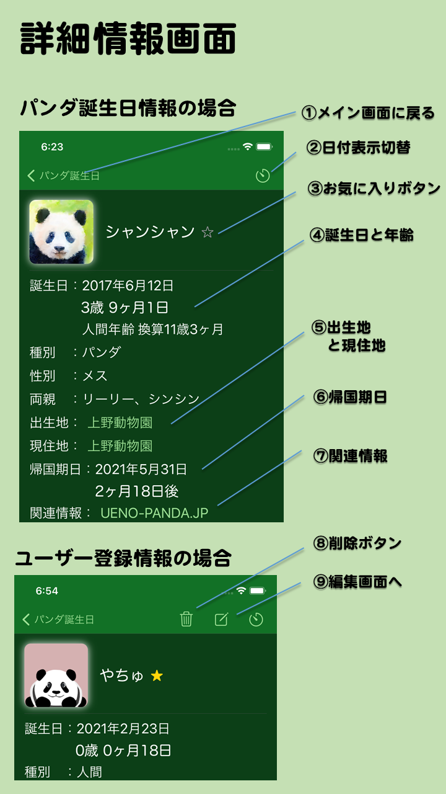

- 詳細情報画面とは
- メイン画面で情報欄をタップして移動してくる画面です。メイン画面で選んだパンダやユーザー登録情報の詳細情報を表示します。パンダや情報の種類によって表示される項目も変わります。
- 画面の説明
- ①メイン画面に戻る
- メイン画面に戻ります。
- ②日付表示切替
- このページの誕生日や来日日、帰国期日の表示形式を切り替えます。
- ③お気に入りボタン
- 押すとお気に入りに入れます。もう一度押すとお気に入りを解除します。
- ④誕生日と年齢
- 誕生日や年齢、人間年齢に換算した年齢などを表示します。イベントの場合はイベント日とイベントまでもしくはイベントからの日数を表示します。日付表示切り替えを押すことで日数の表示形式を切り換えられます。
- ⑤出生地と現住地
- 生まれた場所、今いる動物園を示します。イベントの場合はイベントの場所を表示します。パンダの情報ならタップするとそれぞれの場所の情報があるサイトをブラウザで開きます。
- ⑥帰国期日
- 帰国期日が決まっている場合にそれを表示します。中国から来日したパンダは来日日も表示します。
- ⑦関連情報
- このパンダに関連する情報サイトへのリンクです。タップするとそれぞれのサイトをブラウザで開きます。
- ⑧削除ボタン
- タップすると該当の情報を削除できます。ユーザー登録情報にのみ表示されます。
- ⑨編集画面へ
- タップすると編集画面に移動します。ユーザー登録情報にのみ表示されます。